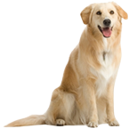
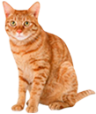

<ion-view title="Page" id="page2" class="ion">
<ion-nav-bar style="display:none;">
</ion-nav-bar>
    <ion-content overflow-scroll="true" padding="false" scroll="false" class="">
        <div>
            
        </div>
		<div class='row topmargin'>
			<div class='petimage'>
				
			</div>
			<div class='divproceedbtn'>
				<button id="dog" ng-click="setpettype($event)" class="button button-light selectionbtn" ui-sref="page2">DOG</button>
			</div>
		</div>
		<div class='row topmargin'>
			<div class='divproceedbtn'>
				<button id="cat" ng-click="setpettype($event)" class="button button-light selectionbtn" ui-sref="page2">CAT</button>
			</div>
			<div class='petimage'>
				
			</div>
		</div>
    </ion-content>
</ion-view>